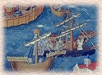

|
Just published!
Description of the World by Marco Polo
(as dictated to popular courtly romance writer Rustichello of Pisa).
He left Venice a boy of 17. He returned a seasoned traveler, merchant, and adviser to
monarchs. Here is just a sample of the marvels Marco Polo describes in his 1298 memoir of 24 years of
travel in the distant lands of the East:
- Black stones that burn like wood.
- Money made from the bark of mulberry trees.
- Black lions.
More about Marco Polo |

The Granger Collection |
To adventurers, merchants, and the merely curious, we also recommend the following:
- The Pleasure Excursion of One Who Is Eager to Traverse the Regions of the World.
(Also known as The Book of Roger. Still available from the 1100’s.)
Guidebook written to accompany a world map engraved on a solid silver plate 5 by 12 feet.
Prepared by Arab cartographer al-Idrisi, court geographer to the Christian king
Roger II of Sicily. (Guide includes about 70 maps, none in silver.)
- A description of the Mongols, whom we call Tartars.
Includes an eyewitness account of the enthronement of the new Great Khan Guyuk in 1246.
Pope Innocent IV sent Italian Franciscan John of Plano Carpini to the court of the Great Khan
of the Mongols to assess the potential Mongol threat to Europe. Read Brother John’s
report on his mission.
More about the Khans
A chronicle from the royal archives of King Louis IX of France.
- The time: 1254.
- The place: Karakorum, Central Asia.
- The assignment: Explore the possibility of a French alliance with Great Khan against the
Muslims in the Holy Land.
- Read William of Rubruck’s report on his mission for Louis IX to the court of the
Great Khan Mangu.
|